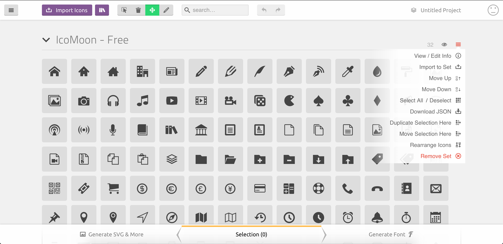
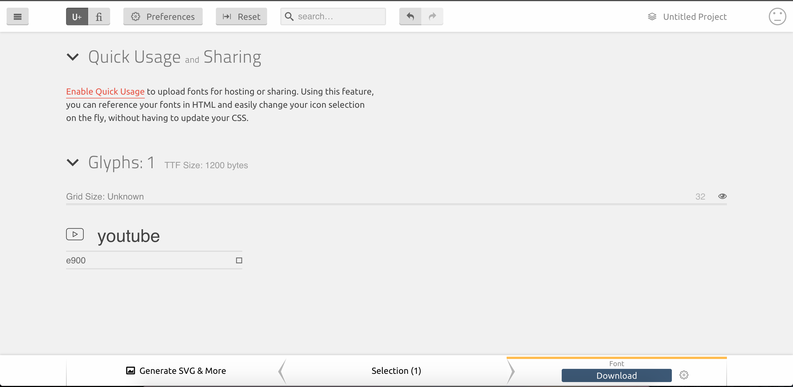

Creating custom iconset
react-native-vector-icons support using custom icon sets if you do not want to use the icons which come bundled or if you want to add your own icons. It supports Fontello and IcoMoon to create custom fonts. We used icomoon to convert our svgs to a config which is readable by the library.
Setting up the framework
Install the NPM module using NPM or Yarn.
npm install --save react-native-vector-icons
OR
yarn add react-native-vector-icons
Configuring your project to support custom iconsets.
We will use IcoMoon to support custom icons/fonts. Icomoon is free and open source application which lets you convert a set of svg icons to fonts. It is a front end only app and does not upload your icons anywhere, so no privacy concerns!
The steps for the configuration are as follows:
Create a resources folder where we will keep our custom fontfile(.ttf).
Do
react-native link react-native-vector-icons. This will setup the vector icons framework for you.
That's it, you are done with the setup. Now we need to get the ttf file and place it inside the resources/fonts that we just created.
How to generate .ttf fonts using icomoon:
Open the iconmoon application.
Remove the current set(if there is one) and create a new empty set and give your preferred name(Remember to give same name everywhere).

Drag and drop your SVG files on the tool.

Select the files which you want to export. Select all if you want to export all the icons.


After the selection, click generate font. This will download a zip file on your system.

The zip file will contain a selection.json file fonts folder containing a .ttf file. We only need these two files to use fonts in react-native.


Put the fontfile(.ttf) in
resources/fontsfolder and add the following script to the package.json:"rnpm": { "assets": [ "resources/fonts" ] }This script will copy the font files to both android and iOS folders. After this, whenever we want to update the fonts, we will do
react-native link react-native-vector-iconsand the fonts will be copied/updated automatically to both android and iOS projects.Put the JSON file (selection.json) in your app and create a file called CustomIcon.js and import the selection.json which you exported in the previous step.
import {createIconSetFromIcoMoon} from 'react-native-vector-icons'; import icoMoonConfig from './selection.json'; export default createIconSetFromIcoMoon(icoMoonConfig);That's it, to use a font simply import the file as a react component and pass the icon name and size(optional) or even style.
import CustomIcon from './components/CustomIcon.js' <CustomIcon name='android' /> //To use the icon <CustomIcon name='android' size={25} /> // To pass size <CustomIcon name='android' style={styles.androidIcon} /> // To pass custom tyle
Changing file names of the fontfile
The default name of the fontfile is icomoon.ttf. If you want to give a different name, go to Preferences after step 5 and change the name there before downloading. Also, make sure that if you change the fontfile name, give the same name to the set as well(by default its "Untitled Set")
It is not recommended to change the filename of .ttf fontfile after the setup/native linking. The filename gets written in project.pbxproj and Info.plist and the file gets copied to android/app/src/main/assets/fonts/ once you run the link command. If you wish to change the filename, you would need to take care of changing the above 2 files as well, and removing the unused icon from android folder which might cause problems if not done properly._
How do I add/delete icons from the fontfile(.ttf)
You can easily change/delete the contents of fontfile. The tool just needs selection.json file, which defines the font configuration. The steps for the same are as follows:
Open IcoMoon App
Upload the current selection.json file.

Edit/Delete the icon using the tools on top. (Adding the Icon is same as step 3 mentioned above)

After the editing is complete, generate a new fontfile by following the steps 5 and 6 mentioned above. Once you have the new fontfile and the new selection.json file, place them in their locations and do
react-native link react-native-vector-icons.
That's how you you change the icons. Pretty neat huh?
This will let us convert any svg image to font which is scalable, platform independent and easy to style. What else can you ask for, right?

The code till here can be found on the branch chapter/11